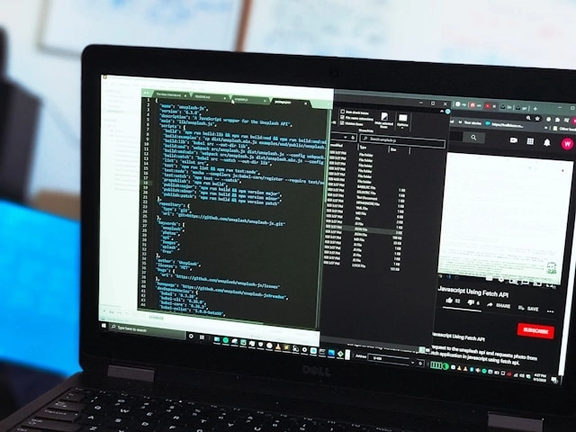

Signal is a purpose-built platform that turns your raw data into real-time, actionable intelligence — without the complexity of traditional data science workflows.

From engineering to revenue, teams across your organization can leverage Signal to detect issues and opportunities faster.
Detect anomalies in deployment metrics, error rates, and infrastructure health before they impact users.
Real-time monitoringGet alerted to changes in conversion rates, pipeline velocity, and customer behavior as they happen.
Revenue intelligenceUnderstand feature adoption, user engagement patterns, and retention drivers without building custom dashboards.
Product analyticsMonitor access patterns, audit logs, and compliance metrics with automated alerting and reporting.
Security monitoringTrack delivery performance, inventory levels, and supplier metrics to optimize operations in real-time.
OperationsMeasure campaign performance, attribution, and ROI across channels with automated insights and recommendations.
Marketing intelligenceSignal's architecture is built to handle enterprise-scale data with zero-downtime deployments and automatic scaling.
Signal is engineered to deliver consistent performance at any scale.
Signal integrates with the tools you already use, so you can start deriving insights immediately.
Join hundreds of teams using Signal to detect, understand, and act on their data in real-time.